مبادرة المملكة العربية السعودية لمكافحة مرض السرطان
تاريخ بداية انطلاق مبادرة 10KSA :
الأميرة ريما بنت بندر تُعلن مبادرة «10KSA 2025» بالتعاون مع وزارة الصحة
05 جمادى الأولى 1447
أعلنت صاحبة السمو الملكي الأميرة ريما بنت بندر بن سلطان بن عبد العزيز، سفيرة خادم الحرمين الشريفين لدى الولايات
المتحدة الأمريكية، عن إطلاق النسخة الجديدة من مبادرة «10KSA» لعام 2025، والتي ستُقام في 8 ديسمبر 2025 تحت شعار «معًا
لأجل الصحة»، وذلك خلال انعقاد ملتقى الصحة العالمي في نسخته الثامنة من 27 إلى 30 أكتوبر 2025 في مركز الرياض للمعارض
والمؤتمرات بملهم.
وأوضحت سموها خلال كلمتها في الملتقى أن المبادرة تُسهم في رفع الوعي الصحي وتعزيز أهمية الوقاية والكشف المبكر، من خلال
الفحوصات الدورية التي تزيد من فرص نجاح العلاج بإذن الله. وتهدف المبادرة إلى تعزيز الوعي الصحي بأمراض السرطان وتشجيع
الكشف المبكر وتبنّي أنماط حياة صحية، عبر تنفيذ أنشطة متنوعة تشمل زراعة 10 آلاف شتلة خزامى في منطقة عسير احتفاءً
بالذكرى العاشرة للمبادرة، وتشكيل شرائط توعوية بلون الخزامى، ودعوة المجتمع إلى توثيق المشاركة عبر وسائل التواصل
الاجتماعي.
وتنطلق المبادرة ضمن عمل حكومي تكاملي يجسّد التعاون بين مختلف القطاعات لتعزيز الوعي الصحي، بدعم من وزارة الصحة
والأمانة العامة للجنة الوزارية للصحة في كل السياسات، ووزارة التعليم، ووزارة الخارجية، ووزارة البيئة والمياه
والزراعة، وهيئة تطوير منطقة عسير، وصندوق البيئة، ومؤسسة مروج، إضافة إلى شركائها من البنك العربي الوطني، وشركة مكاتفة
للاستشارات، ومجموعة روشن، وويبوك.
وأكدت وزارة الصحة أن المبادرة تُسهم في ترسيخ مفهوم الوقاية قبل العلاج، مشيرةً إلى التزامها بالتنسيق مع مختلف الجهات
الحكومية والخاصة، دعمًا لتحقيق مستهدفات برنامج تحول القطاع الصحي المنبثق من رؤية السعودية 2030، في بناء مجتمع حيوي
ينعم بصحة مستدامة ووطن طموح قائم على التكامل والحوكمة الفاعلة.
يُذكر أن مبادرة «10KSA» أطلقتها الأميرة ريما بنت بندر عام 2015 بهدف رفع الوعي بالسرطان والصحة الوقائية، ولا تزال حتى
اليوم تحمل لقب أكبر شريط توعوي بشري في العالم، بعد دخولها موسوعة غينيس للأرقام القياسية بمشاركة نحو 9 آلاف امرأة في
الرياض.
نبذة عن مبادرة 10KSA :
مشروع *10KSA* هو مبادرة وطنية أطلقتها صاحبة السمو الملكي الأميرة ريما بنت بندر بن سلطان آل سعود بهدف رفع
مستوى الوعي حول السرطان في المملكة. بدأت الحملة في عام 2025 وتستهدف تحطيم الرقم القياسي في موسوعة غينيس لتشكيل أكبر
شريط بشري توعوي خاص بالمملكة، مما يعكس التزام المملكة بتحقيق رؤية 2030 في مجال الصحة والرفاهية.
*أهداف المشروع الرئيسية*
- زيادة الوعي بأهمية الكشف المبكر عن السرطان.
- تشجيع الفحص الدوري والتبني لأساليب حياة صحية.
- تعزيز الشراكة بين القطاع الحكومي والخاص والمنظمات غير الربحية مثل جمعية زهرة.
*الفعاليات البارزة*
- تنظيم مهرجانات صحية تشمل تمارين رياضية وورش عمل للتغذية.
- إطلاق حملات واسعة على وسائل التواصل الاجتماعي استمرت عاماً كاملاً.
- توزيع مواد تثقيفية وإجراء استبيانات حول الصحة والعافية.
*الدعم والشراكات*
- دعم من وزارة التعليم، وزارة الموارد البشرية والتنمية الاجتماعية، ووزارة الصحة.
- تعاون مع جمعية زهرة لجمع التبرعات وتقديم الدعم لمرضى السرطان.
هذه المبادرة ليست مجرد حملة توعية؛ إنها حركة مجتمعية تسعى لتحويل الوعي إلى فعل واقعي، حيث تشارك آلاف المواطنين في
فعالياتها السنوية وتساهم في بناء مستقبل أكثر صحة للجميع.
صور لمبادرة 10KSA :
 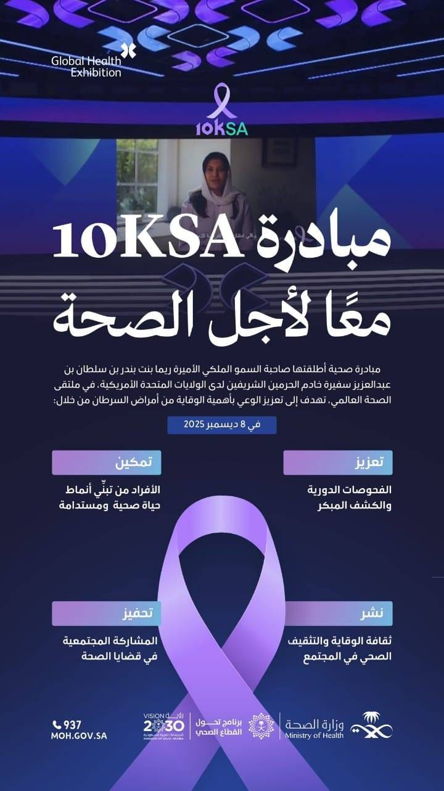
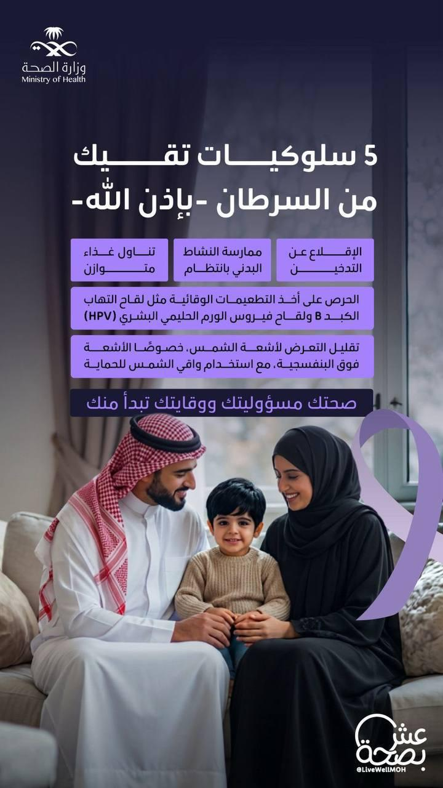
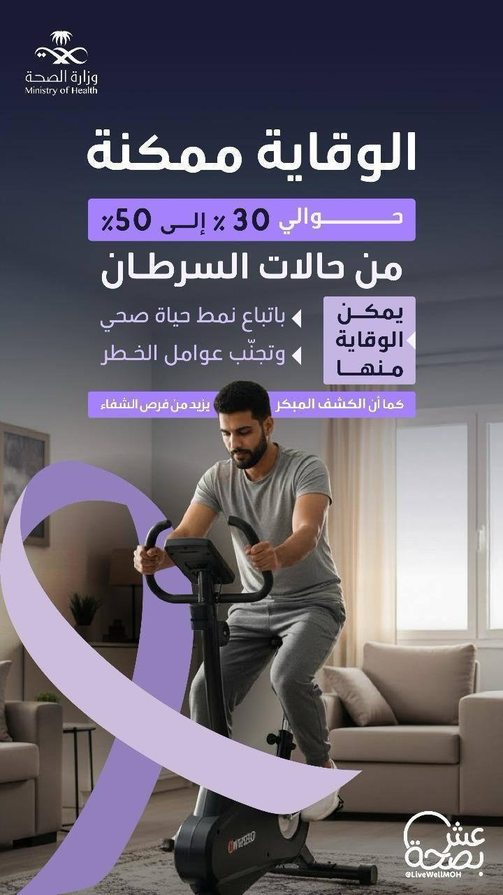
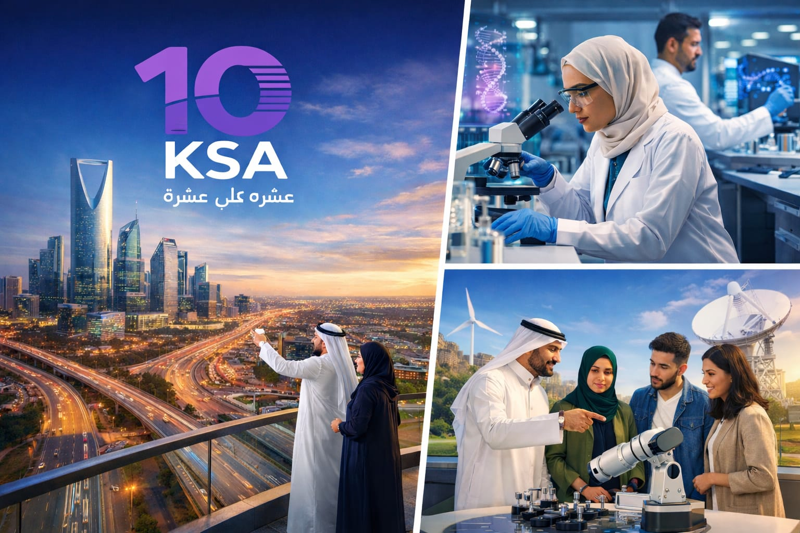
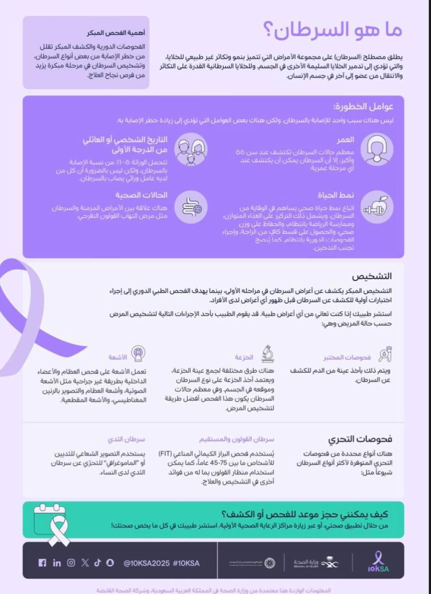
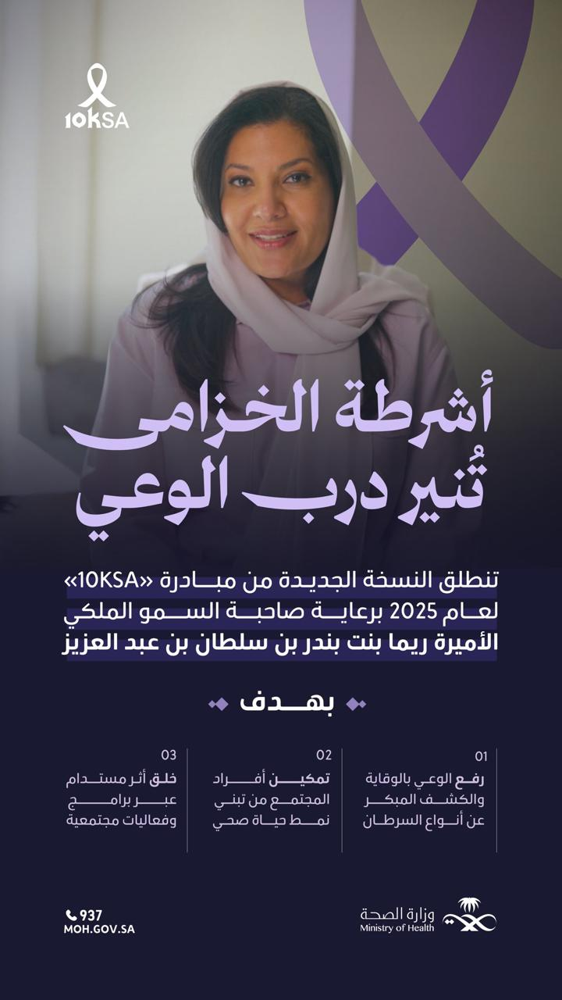
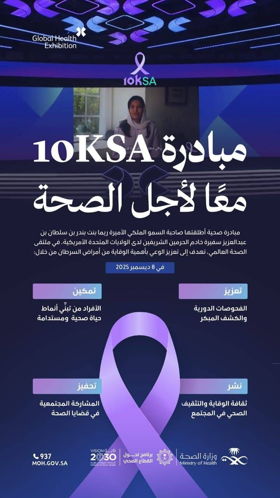
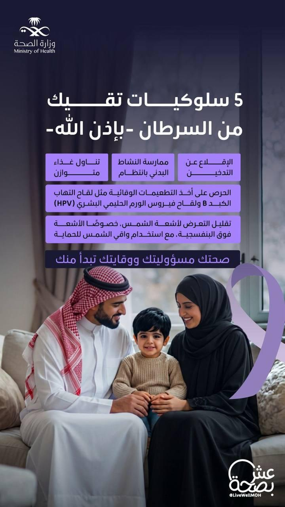
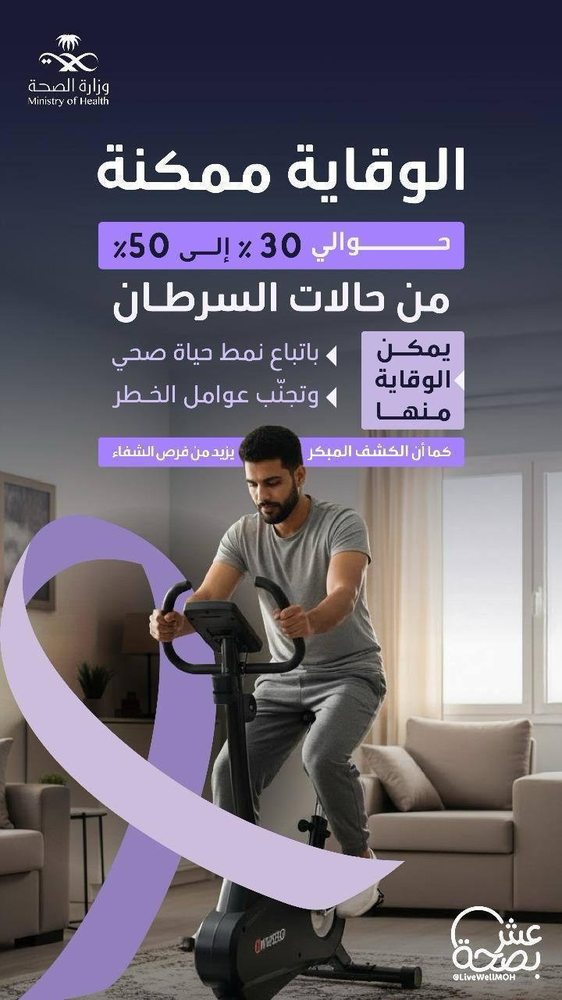
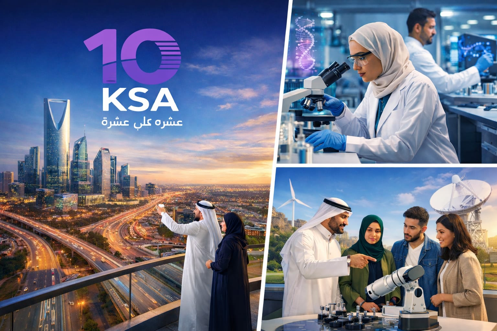
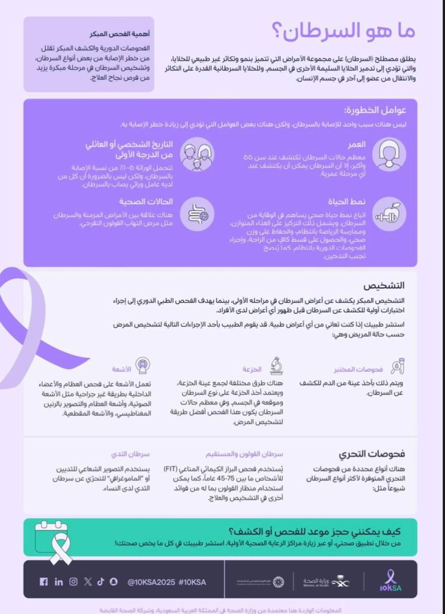
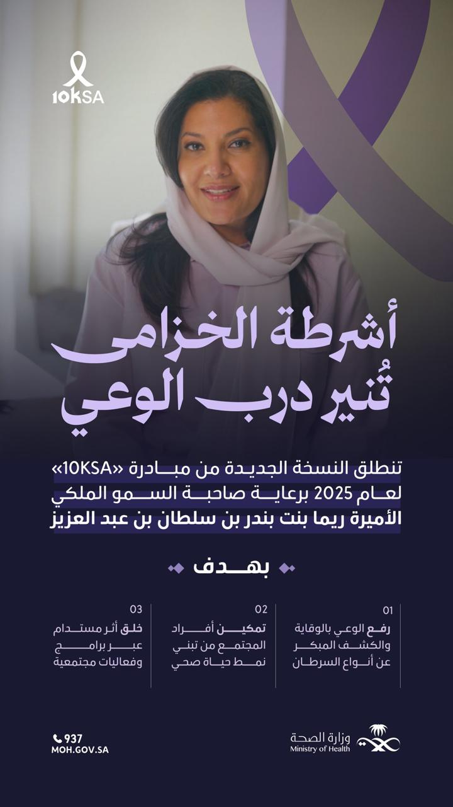
لمعرفة المزيد عن مبادرة 10KSA قم بزيارة الموقع الرسمي للمبادرة من
هنا